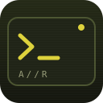
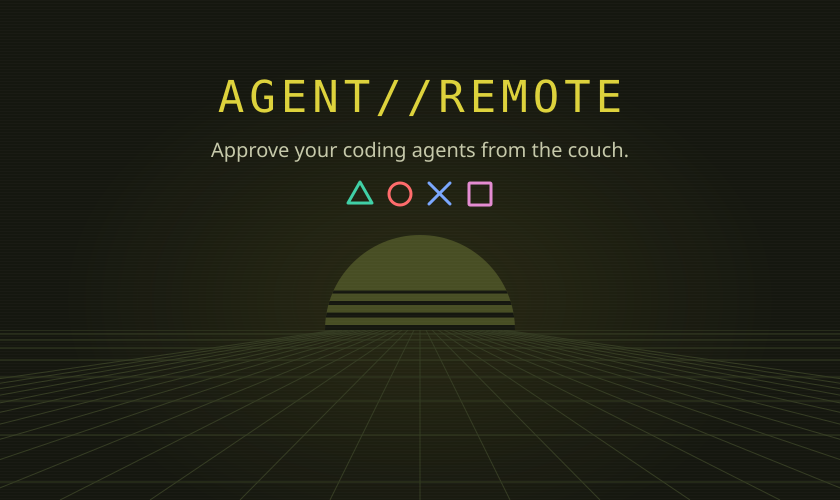

APPLICATION IDENTITY · PREVIEW ONLY
AGENT//REMOTE
One application color across session management, settings, the Vita home icon and LiveArea. Conversations and capability popups retain their Agent palettes.
#DDD23B
HOME SCREEN ICON

Agent Remote
128 × 128
source canvas
source canvas
Terminal mark and indicator share the application accent. The dark olive surface keeps the same low-light character.
LIVEAREA · 840 × 500

Launch tile · 280 × 158PlayStation button colors stay unchanged